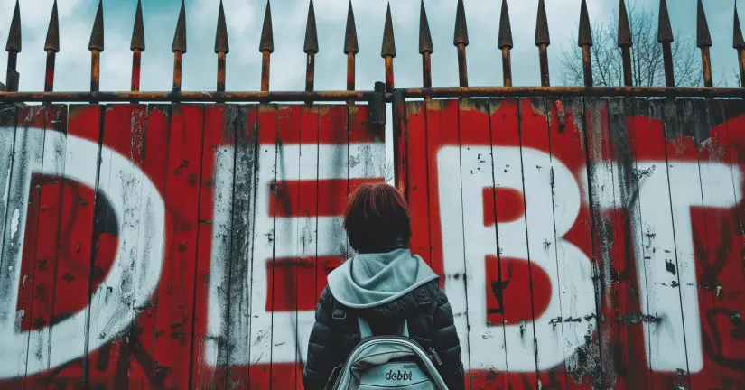

Новости
Введение
Банкротство физических лиц — это юридическая процедура, позволяющая гражданам,
не способным выполнять свои финансовые обязательства, получить освобождение от долгов
при определённых условиях. В России процедура банкротства физического лица регулируется
Федеральным законом № 127-ФЗ «О несостоятельности (банкротстве)», принятом 26 октября
2002 года.

Понятие банкротства физических лиц
Банкротство физических лиц предполагает признание судом неспособности гражданина
удовлетворить требования кредиторов по денежным обязательствам и исполнить обязанность
по уплате обязательных платежей. Инициировать процедуру банкротства может как сам
должник, так и его кредиторы, если сумма задолженности превышает 500 тысяч рублей и
обязательства не исполняются в течение более трех месяцев.
Процедура банкротства
Процедура банкротства физических лиц состоит из нескольких этапов:
- Подача заявления в арбитражный суд: Заявление может подать как должник, так и кредиторы. К заявлению должны прилагаться документы, подтверждающие финансовое состояние должника.
- Рассмотрение дела в суде: Суд рассматривает представленные документы и принимает решение о начале процедуры банкротства. На этом этапе может быть введена реструктуризация долгов.
- Финансовое управление: Назначается финансовый управляющий, который анализирует финансовое состояние должника, выявляет имущество, подлежащее продаже, и осуществляет другие мероприятия, направленные на удовлетворение требований кредиторов.
- Реализация имущества: При отсутствии возможности реструктуризации долгов производится продажа имущества должника с последующим распределением вырученных средств среди кредиторов.
- Освобождение от долгов: По завершении процедуры, если должник добросовестно выполнил все предписания суда и управляющего, он освобождается от оставшихся обязательств.
Процедура банкротства
Процедура банкротства физических лиц состоит из нескольких этапов:
- Ограничения на финансовую деятельность: В течение трех лет после признания банкротом гражданин не может занимать руководящие должности в организациях, а также обязан указывать факт своего банкротства при заключении кредитных договоров.
- Потеря имущества: В процессе реализации имущества должник может потерять значительную часть своего имущества, за исключением того, которое защищено законом (например, единственное жилье).
- Испорченная кредитная история: Факт банкротства остаётся в кредитной истории гражданина на протяжении нескольких лет, что затрудняет получение кредитов в будущем.
Процедура банкротства
Процедура банкротства физических лиц состоит из нескольких этапов:
- Ограничения на финансовую деятельность: В течение трех лет после признания банкротом гражданин не может занимать руководящие должности в организациях, а также обязан указывать факт своего банкротства при заключении кредитных договоров.
- Потеря имущества: В процессе реализации имущества должник может потерять значительную часть своего имущества, за исключением того, которое защищено законом (например, единственное жилье).
- Испорченная кредитная история: Факт банкротства остаётся в кредитной истории гражданина на протяжении нескольких лет, что затрудняет получение кредитов в будущем.
Заключение
Банкротство физических лиц – это серьезный шаг, который может помочь выйти из тяжелой
финансовой ситуации, но одновременно влечет за собой значительные ограничения и
последствия. Прежде чем решиться на банкротство, стоит тщательно взвесить все за и
против, а также проконсультироваться с юристом, чтобы выбрать наиболее оптимальный
способ решения долговых проблем.